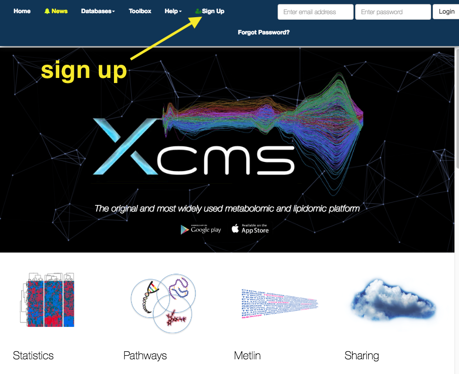
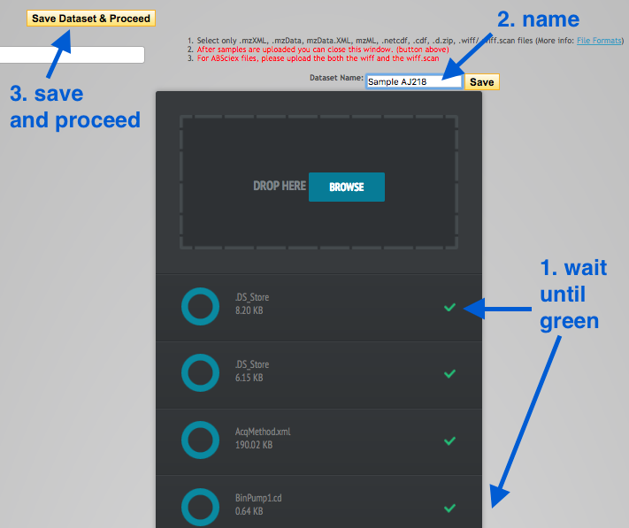
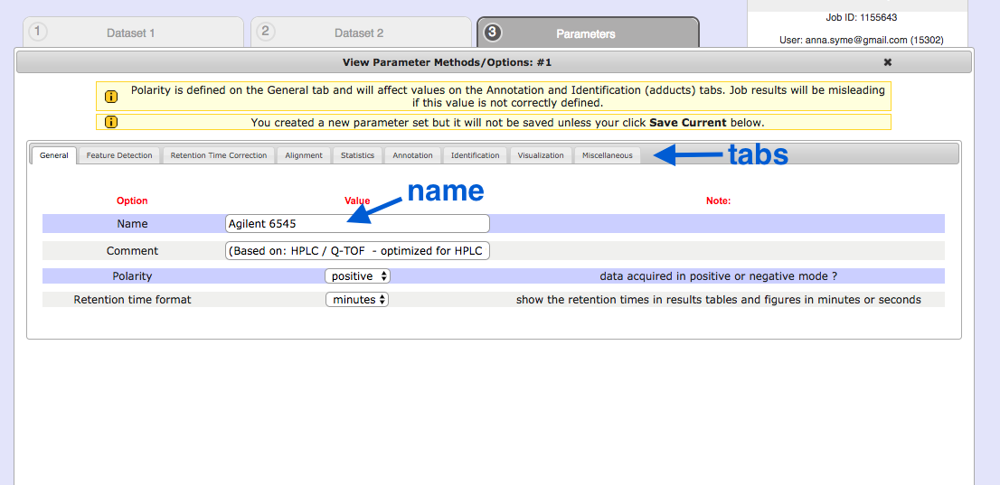

Metabolomics with XCMS
Overview
Metabolomics is the study of metabolites: small molecules (smaller than proteins) produced by organisms. One technique to identify and quantify metabolites is LC/MS (liquid chromatography-mass spectrometry).
In liquid chromatography, metabolites are sent through a column and are separated by various chemical properties.
- At each time point, the abundance of the particular group of metabolites is measured (the intensity).
- This is called a chromatogram:

image: C Wenger, Wikipedia
At each time point in this chromatogram, the group of metabolites is then ionized (charged) and fired through a mass spectrometer.
- These are separated based on their mass-to-charge ratio.
- This adds another dimension to the graph: an axis with the mass-to-charge ratio of the metabolites found at that time point, and their intensities.

image: Daniel Norena-Caro, Wikipedia.
There are multiple mass spectra. Each spectrum is often simplified into a graph of peaks only (local maxima):

image: Wikipedia.
- Each of these peaks is a “feature”: an ion with a unique m/z and retention time.
- These masses can then be matched to a database to identify the metabolites.
A common aim is to compare metabolites between two samples (e.g. two different bacterial strains), and from there, to understand which biological pathways may be up- or down-regulated.
In this tutorial, we will use a platform called “XCMS online” to analyse metabolite data.
- Input: raw data from mass spectrometry
- Output: identified metabolites, and a comparison of their abundances between samples.
XCMS
Go to: https://xcmsonline.scripps.edu and sign up.

Get data
The data we will use today is from two bacterial strains of Klebsiella pneumoniae.
- strain AJ218 - 6 replicates
- strain KPC2 (antibiotic resistance) - 6 replicates
The raw data output from the mass spectrometer are points in a 3D graph: intensity, m/z, time (retention time).
Download these files to your local computer.
Data format:
-
We will use .mzML format.
-
The machine used to produced this data originally produced .d files. These have been converted into .mzML format using the Proteowizard MSConvert program.
To use Proteowizard: (Windows only)
- Download the program and open the MSConvert program.
- Browse. Add files.
- Change output format to .mzML
- Leave default settings.
- Click Start in the bottom right hand corner.
An alternative is the commercially-available Qualitative Analysis Software.
Upload data
In the top panel, go to

-
Drag the
.mzML files into theDrop Here box - 6 replicates for each strain. -
Wait until all files have a green tick (scroll down to check all).
- Name the datset (e.g. Sample AJ218 or Sample KPC2) and click
Save . - Click
Save Dataset & Proceed .

Repeat with the second strain.
Set up job
In the top panel, click on

On the right hand side, under Job Summary, Job Name: click
Under
- Choose AJ218.
Under
- Choose KPC2.
We now need to set parameters that correspond with the machine on which the data was generated. In a typical analysis, we would look at the raw output files and examine the chromatograms and mass spectra to inform some of the settings. Here we have chosen appropriate settings for this data set.
Under
- Click
View/Edit . - This brings up a window to change some settings.

General
- First, click
Create New in the bottom right hand corner. - Give it a name. e.g. Agilent 6545
- (Don’t click Save Current yet).
Retention time format : secondsPolarity : negative
See the tabs along the top: we will change some of these settings.
Feature Detection
This is to adjust for noise in the centroid data.
Method : centWaveppm : 50minimum peak width : 10maximum peak width : 50
Retention time correction
This is to correct the shift that occurs as the run progresses.
Method : obiwarpprofStep : 0.1
Alignment
This is to align spectra after retention time correction.
mzwid : 0.5minfrac : 0.5bw : 20
Statistics
Set up the statistical test for the metabolites from two strains.
Statistical test: Unpaired non-parametric (Mann-Whitney)
Annotation
Search for : isotopes + adductsm/z absolute error : 0.05ppm : 50
Identification
ppm : 50adducts : [M-H]-sample biosource : Select biosource. Search: K pneumo.Select the top strain.pathway ppm deviation : 5
Visualization
EIC width : 200
Miscellaneous
Bypass file sanity check : tick
Next
Save Current Submit Job
This will now bring up the “View Results” page.
- The current job will be listed as “Processing” with a % completion bar.
- The time taken will depend on server load.
View results
Click on
There are six graphs, and options for other results in the left hand panel.

Ions detected
Look at the top three graphs.
-
Graph 1: Total ion Chromatograms (original):
- All the ions detected. Their intensity vs retention time.
-
Graph 2: Retention Time Deviation vs. Retention Time:
- A graph showing the correction curve.
-
Graph 3: Total ion Chromatograms (corrected):
- A corrected version of graph 1.
Sample information
-
Graphs 5 and 6 show MDS (Multi-dimensional Scaling) and PCA (Principal Components Analysis) results.
- Are the samples separated well?
- Samples (or conditions) should be separated into two groups.
- For a more detailed examination, click on “iPCA” in the left hand panel.
Results Table
Click on the Results Table in the left hand panel. This is a table of “features” - a feature is an ion with unique m/z and retention time.
- Click on a row (a feature) to display associated graphs in the right-hand panel.

- The METLIN database contains data on metabolites, their mass, and their known and predicted fragment masses.
To filter the table, click on the small magnifying glass:

- Filter by p-value or fold change (or both).
- e.g. p-value less or equal to 0.01, fold change greater than 30
- Investigate these features and the identified matches in the Metlin database.
Cloud plot
In the results pane on the left, click on Metabolomic Cloud Plot.
- A cloud plot shows the features (m/z and retention time) as dots/circles.
- The size of the circles is relative to their fold change.
- Features are shown as either up- or down-regulated, by their position above or below the 0-axis.
- Adjust p-value and fold change, and click
Regenerate Cloud Plot . - Click on a feature to see its associated graphs in the left hand panel.

Activity network
This shows the pathways that correspond to the identified metabolites. The table under the image shows the “Top pathways” - these are ordered by their p-values.
Links
Tautenhahn, R. et al. (2012) XCMS Online: A Web-Based Platform to Process Untargeted Metabolomic Data. Analytical Chemistry. DOI: 10.1021/ac300698c
Smith, R. et al. (2014) Proteomics, lipidomics, metabolomics: a mass spectrometry tutorial from a computer scientist’s point of view. BMC Bioinformatics. DOI: 10.1186/1471-2105-15-S7-S9. See Figure 2 for an excellent explanation of the various graphs produced from MS.
Patti, G. J. et al. (2013) A View from Above: Cloud Plots to Visualize Global Metabolomic Data. Analytical Chemistry. DOI: 10.1021/ac3029745